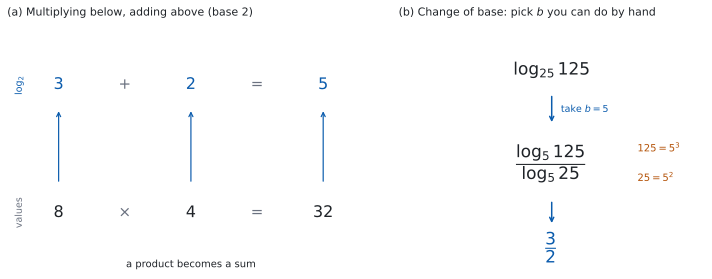

SL 1.7b — Laws of logarithms, change of base and exponential equations（対数法則・底の変換・指数方程式）
- 公式集の対数法則 \(3\) つ（積・商・累乗）を、両向きに使える。
- change of base（底の変換）の式を使って、底のちがう対数をそろえられる。
- \(\log_{a} a^{x} = x\) と \(a^{\log_{a} x} = x\) が、打ち消し合う組であることが分かる。
- 指数方程式を、両辺の底をそろえて解ける。
- 底がそろえられないときに、両辺の対数をとって解ける。
- 答えを \(\dfrac{\ln p}{\ln q}\) や \(\log_{a} b\) の形で、正確に書ける。
The idea
1. 対数法則は、指数法則の言いかえ
SL 1.5 で、対数は指数を取り出すものだと見ました。
指数の世界では、掛け算をすると指数が足し算になります（SL 1.5 第 2 節）。
\[ 2^{3} \times 2^{2} = 2^{5} \]
これを対数で書き直すと、
\[ \log_{2} 8 + \log_{2} 4 = \log_{2} 32 \]
\(3 + 2 = 5\) です。掛け算が、足し算に変わりました。

これが対数法則の正体です。新しい規則ではなく、指数法則を別の言葉で言っただけです。
2. \(3\) つの法則
\[ \log_{a} xy = \log_{a} x + \log_{a} y \tag{1}\]
\[ \log_{a} \frac{x}{y} = \log_{a} x - \log_{a} y \tag{2}\]
\[ \log_{a} x^{m} = m \log_{a} x \tag{3}\]
公式集の 1.7 の欄に、そのまま印刷されています。
\(\log_{a} xy = \log_{a} x + \log_{a} y\)
\(\log_{a} \dfrac{x}{y} = \log_{a} x - \log_{a} y\)
\(\log_{a} x^{m} = m \log_{a} x\)
シラバスの Content 欄には、使える範囲も書かれています。
for \(a\), \(x\), \(y > 0\)
これに加えて、底は \(a \neq 1\) でなければなりません。\(1\) は何乗しても \(1\) なので、\(\log_{1}\) は決まらないからです（SL 1.5）。
\(3\) つとも、底 \(a\) は動きません。 変わるのは中身だけです。
\(\log_{a}(x + y)\) を、\(\log_{a} x\) と \(\log_{a} y\) に分ける法則はありません。
\[ \log_{a}(x+y) \neq \log_{a} x + \log_{a} y \]
法則が使えるのは、中身が掛け算・割り算・累乗のときだけです（Common errors）。
（正確には「一般には等しくない」です。\(x + y = xy\) になる特別な場合、たとえば \(x = y = 2\) なら、たまたま両辺が一致します。\(4 = 2 \times 2\) だからです。）
式 3 は、\(2\) 通りに使えます。
- 前に出す。 \(\log_{2} 4^{5} = 5 \log_{2} 4 = 5 \times 2 = 10\)
- 中に入れる。 \(3 \log 2 = \log 2^{3} = \log 8\)
どちらの向きも使えるようにしておいてください。
3. 底の変換
底がそろっていないと、第 2 節 の法則は使えません。そこで、底をそろえる式があります。
\[ \log_{a} x = \frac{\log_{b} x}{\log_{b} a} \tag{4}\]
公式集の 1.7 の欄に、次の形で印刷されています。
\(\log_{a} x = \dfrac{\log_{b} x}{\log_{b} a}\)
条件は、シラバスの Content 欄のほうに書かれています。
for \(a\), \(b\), \(x > 0\)
これに加えて、\(a \neq 1\) と \(b \neq 1\) が要ります。\(b = 1\) だと分母が \(0\)、\(a = 1\) だと左辺が決まらないからです。
シラバスの Guidance 欄には、次の例が挙がっています。
\(\log_47 = \dfrac{\ln7}{\ln4}\)
\(b\) は、こちらが選べます。 選び方は \(2\) つです。
| 目的 | 選ぶ \(b\) | 例 |
|---|---|---|
| 手で値を出す | \(a\) と \(x\) の共通の底 | \(\log_{25} 125 = \dfrac{\log_{5} 125}{\log_{5} 25} = \dfrac{3}{2}\) |
| 電卓で値を出す | \(10\) か \(e\) | \(\log_{4} 7 = \dfrac{\ln 7}{\ln 4}\) |
\(25 = 5^{2}\)、\(125 = 5^{3}\) なので、\(b = 5\) を選べば上下とも整数になります。Paper 1 では、この選び方が要になります。
4. 打ち消し合う \(2\) つ
\[ \log_{a} a^{x} = x, \qquad a^{\log_{a} x} = x \tag{5}\]
公式集の 1.7 の欄に、Exponential and logarithmic functions として印刷されています。
\(a^{x} = \mathrm{e}^{x \ln a}\) ; \(\log_{a} a^{x} = x = a^{\log_{a} x}\) where \(a\), \(x > 0\), \(a \neq 1\)
前半の \(a^{x} = \mathrm{e}^{x\ln a}\) は、SL では Topic 2（Functions） の指数関数で使います。このページで使うのは、後半のほうです。
意味は単純です。\(\log_{a} x\) は「\(a\) を何乗すれば \(x\) になるか」でした。その答えを、実際に \(a\) の指数に入れ直せば、\(x\) に戻ります。\(\log_{a}\) と \(a^{\square}\) は、たがいに打ち消し合います。
どちらの式も、\(a > 0\)、\(a \neq 1\)、\(x > 0\) のときに使えます。
\[ \log_{2} 2^{7} = 7, \qquad 5^{\log_{5} 9} = 9 \]
指数方程式を解くときに、この打ち消しをそのまま使います（第 7 節）。
5. まとめる／ばらす
問題文は、たいてい次のどちらかを求めています。
まとめる。 いくつかの対数を、\(1\) つの対数にします。
\[ 2\log_{3} 2 + \log_{3} 5 = \log_{3} 2^{2} + \log_{3} 5 = \log_{3} 4 + \log_{3} 5 = \log_{3} 20 \]
係数を先に中へ入れるのが順です（式 3）。そうしないと 式 1 が使えません。
ばらす。 \(1\) つの対数を、与えられた記号で表します。
\(\log_{a} 2 = p\)、\(\log_{a} 3 = q\) が与えられていて、\(\log_{a} 12\) を表すなら、
\[ 12 = 2^{2} \times 3, \qquad \log_{a} 12 = 2\log_{a} 2 + \log_{a} 3 = 2p + q \]
中身を素因数に分けるのが、いつもの第一歩です。
6. 指数方程式（\(1\)）— 底をそろえる
\(x\) が指数にある方程式は、両辺を同じ底の累乗にできるなら、対数は要りません。
\[ 8^{x} = 4 \]
\(8 = 2^{3}\)、\(4 = 2^{2}\) なので、
\[ 2^{3x} = 2^{2} \ \Rightarrow \ 3x = 2 \ \Rightarrow \ x = \frac{2}{3} \]
底がそろえば、指数どうしを比べるだけになります。\(a > 0\)、\(a \neq 1\) のとき \(a^{x}\) は同じ値を \(2\) 度とらないので、両辺の指数を比べてよいのです。
\(\left(\dfrac{1}{2}\right)^{x}\) のような形も、\(2^{-x}\) と書きかえれば同じです（SL 1.5）。
7. 指数方程式（\(2\)）— 対数をとる
底がそろえられないときは、両辺の対数をとります。
\[ 3^{x} = 7 \]
\(7\) は \(3\) の累乗ではないので、第 6 節 の手は使えません。両辺に \(\ln\) をつけます。
\[ \ln 3^{x} = \ln 7 \]
\[ x \ln 3 = \ln 7 \]
\[ x = \frac{\ln 7}{\ln 3} \]
\(2\) 行目で 式 3 を使いました。指数の \(x\) が、前に出ます。 これが対数を使う理由のすべてです。
底は \(10\) でも \(e\) でもかまいません。\(\dfrac{\log 7}{\log 3}\) でも同じ値です（式 4）。
TI-Nspire なら ln(7)/ln(3) で \(1.7712\ldots\) と出ます。solve(3^x = 7, x) でも解けます。
最終解答は、指示がなければ有効数字 \(3\) 桁で \(x = 1.77\) と書きます。
Paper 2 でも、まず正確な形を書いてから小数に直してください。方法点（M mark）を得るためにも、途中式を書いておくのが安全です。
Paper 1 では、\(\dfrac{\ln 7}{\ln 3}\) が答えです。 小数に直す必要はありません。
Why it works
式 1 は、指数法則から \(3\) 行で出ます。
以下、\(a > 0\)、\(a \neq 1\)、\(x > 0\)、\(y > 0\) とします。\(\log_{a} x = m\)、\(\log_{a} y = n\) とおきます。定義（SL 1.5）から
\[ x = a^{m}, \qquad y = a^{n} \]
掛けると、指数法則で
\[ xy = a^{m} \times a^{n} = a^{m+n} \]
これを対数の形に戻すと（式 5）、
\[ \log_{a} xy = m + n = \log_{a} x + \log_{a} y \]
同じやり方で、割り算からは 式 2 が、累乗からは 式 3 が出ます。 覚える式は \(3\) つですが、もとは指数法則の \(3\) つです。
底の変換の式も、同じ道すじで出ます。 \(\log_{a} x = m\) とおくと \(x = a^{m}\) です。両辺に \(\log_{b}\) をつけて、
\[ \log_{b} x = \log_{b} a^{m} = m \log_{b} a \]
\(m\) について解けば、
\[ m = \frac{\log_{b} x}{\log_{b} a} \]
これが 式 4 です。
\(b\) は、\(b > 0\)、\(b \neq 1\) でありさえすれば、どれを選んでも同じ値になります。 どの \(b\) を選ぶかは、この導き方のどこにも効いていないからです。
ただし最後に \(\log_{b} a\) で割っているので、\(\log_{b} a \neq 0\)、つまり \(a \neq 1\) が要ります。\(x > 0\) も、\(\log_{b} x\) が書ける条件として要ります。
Worked examples
問題文は英語です。意味が理解できなかったら、問題文の下の「日本語訳」を開いてください。解説は日本語です。
例題も演習も、すべて電卓なしで解けます。 Paper 1 のつもりで解いてください。
例題 1 Write each expression as a single logarithm.
(a) \(\log 6 + \log 5\)
(b) \(\log_{2} 24 - \log_{2} 3\)
(c) \(2\log_{5} 3 + \log_{5} 2\)
(d) Explain why \(\log 6 + \log 5\) can be written as a single logarithm, referring to a law of exponents.
日本語訳
次の式を、\(1\) つの対数で書きなさい。
(a) \(\log 6 + \log 5\)
(b) \(\log_{2} 24 - \log_{2} 3\)
(c) \(2\log_{5} 3 + \log_{5} 2\)
(d) \(\log 6 + \log 5\) が \(1\) つの対数で書ける理由を、指数法則にふれながら説明しなさい。
(a) 足し算なので、中身を掛けます（式 1）。
\[ \log 6 + \log 5 = \log 30 \]
(b) 引き算なので、中身を割ります（式 2）。
\[ \log_{2} 24 - \log_{2} 3 = \log_{2} 8 \]
\(8 = 2^{3}\) なので、値まで出ます。\(\log_{2} 8 = 3\) です。
(c) 係数を先に中へ入れます（式 3）。
\[ 2\log_{5} 3 = \log_{5} 3^{2} = \log_{5} 9 \]
\[ \log_{5} 9 + \log_{5} 2 = \log_{5} 18 \]
(d) Explain why なので、英語で理由を書きます。
試験ではこう書く
Writing \(6 = 10^{m}\) and \(5 = 10^{n}\) means \(m = \log 6\) and \(n = \log 5\). The product law of exponents gives \(6 \times 5 = 10^{m} \times 10^{n} = 10^{m+n}\), so \(30 = 10^{m+n}\) and therefore \(\log 30 = m + n = \log 6 + \log 5\). Multiplying the numbers adds their exponents, which is exactly what the first law of logarithms states.
（\(6 = 10^m\)、\(5 = 10^n\) と書けば \(m = \log 6\)、\(n = \log 5\) である。指数の積の法則から \(6 \times 5 = 10^{m+n}\) なので \(30 = 10^{m+n}\) であり、\(\log 30 = m+n = \log 6 + \log 5\) となる。数を掛けると指数が足されるという事実が、対数の第 \(1\) 法則の中身である、という意味です。）
検算（(b) について）。 答えから逆にたどります。\(\log_{2} 8 = 3\) は \(2^{3} = 8\) ということです。この \(8\) に、引いた \(\log_{2} 3\) の中身 \(3\) を掛け戻すと \(8 \times 3 = 24\) ✓ もとの中身に戻りました。
大きさも見ておきます。\(\log_{2} 24\) は \(\log_{2} 16 = 4\) と \(\log_{2} 32 = 5\) の間、\(\log_{2} 3\) は \(1\) と \(2\) の間なので、差は \(2\) と \(4\) の間です。\(3\) はこの中に入ります ✓ 範囲を絞るだけで、値を決める検算ではありません。
検算（(c) について）。 両辺を \(5\) の指数に戻します（式 5）。
\[ 5^{\log_{5} 18} = 18, \qquad 5^{2\log_{5} 3 + \log_{5} 2} = \left(5^{\log_{5} 3}\right)^{2} \times 5^{\log_{5} 2} = 3^{2} \times 2 = 18 \]
どちらも \(18\) です ✓ 対数法則を使わない道すじで、同じところに着きました。
(c) で \(\log_{5} 6\) としていたら、\(2\) を係数のまま \(3 \times 2\) にしています。係数は、中身の指数になります。
(a) \(\log 6 + \log 5 = \log 30\)
(b) \(\log_{2} 24 - \log_{2} 3 = \log_{2} 8 = 3\)
(c) \(2\log_{5} 3 + \log_{5} 2 = \log_{5} 9 + \log_{5} 2 = \log_{5} 18\)
(d) With \(6 = 10^{m}\) and \(5 = 10^{n}\), the product law gives \(30 = 10^{m+n}\), so \(\log 30 = m + n = \log 6 + \log 5\).
例題 2 Find the value of each expression without using a calculator.
(a) \(\log_{2} 40 - \log_{2} 5\)
(b) \(\log_{3} 9^{4}\)
(c) \(\log_{10} 4 + \log_{10} 25\)
(d) \(\log_{9} 27\)
日本語訳
電卓を使わずに、次の値を求めなさい。
(a) \(\log_{2} 40 - \log_{2} 5\)
(b) \(\log_{3} 9^{4}\)
(c) \(\log_{10} 4 + \log_{10} 25\)
(d) \(\log_{9} 27\)
(a) 引き算なので、中身を割ります。
\[ \log_{2} 40 - \log_{2} 5 = \log_{2} 8 = 3 \]
(b) 指数を前に出します（式 3）。
\[ \log_{3} 9^{4} = 4 \log_{3} 9 = 4 \times 2 = 8 \]
(c) 足し算なので、中身を掛けます。\(4 \times 25 = 100\) です。
\[ \log 4 + \log 25 = \log 100 = 2 \]
(d) 底の変換を使います（式 4）。\(9\) も \(27\) も \(3\) の累乗なので、\(b = 3\) を選びます。
\[ \log_{9} 27 = \frac{\log_{3} 27}{\log_{3} 9} = \frac{3}{2} \]
検算（(b) について）。 中身を先に \(3\) の累乗にします。\(9^{4} = \left(3^{2}\right)^{4} = 3^{8}\) なので、\(\log_{3} 3^{8} = 8\) ✓（式 5）式 3 を使わない別の道すじです。
検算（(d) について）。 答えを指数の形に戻します。\(9^{\frac{3}{2}} = \left(\sqrt{9}\right)^{3} = 3^{3} = 27\) ✓（SL 1.7a）
(d) を \(\dfrac{2}{3}\) としていたら、上下が逆です。\(9^{\frac{2}{3}} < 9^{1} = 9\) なので、\(27\) には届きません。「\(9\) を何乗したら \(27\) か」を思い出せば、\(1\) より大きいはずだと分かります。
(a) \(\log_{2} 40 - \log_{2} 5 = \log_{2} 8 = 3\)
(b) \(\log_{3} 9^{4} = 4\log_{3} 9 = 8\)
(c) \(\log 4 + \log 25 = \log 100 = 2\)
(d) \(\log_{9} 27 = \dfrac{\log_{3} 27}{\log_{3} 9} = \dfrac{3}{2}\)
例題 3 Solve each equation.
(a) \(2^{x} = 32\)
(b) \(9^{x} = 27\)
(c) \(\left(\dfrac{1}{2}\right)^{x} = 8\)
(d) \(4^{x+1} = 8^{x}\)
日本語訳
次の方程式を解きなさい。
(a) \(2^{x} = 32\)
(b) \(9^{x} = 27\)
(c) \(\left(\dfrac{1}{2}\right)^{x} = 8\)
(d) \(4^{x+1} = 8^{x}\)
(a) \(32 = 2^{5}\) です。
\[ 2^{x} = 2^{5} \ \Rightarrow \ x = 5 \]
(b) どちらも \(3\) の累乗にします。\(9 = 3^{2}\)、\(27 = 3^{3}\) です。
\[ 3^{2x} = 3^{3} \ \Rightarrow \ 2x = 3 \ \Rightarrow \ x = \frac{3}{2} \]
(c) \(\dfrac{1}{2} = 2^{-1}\) です。
\[ 2^{-x} = 2^{3} \ \Rightarrow \ -x = 3 \ \Rightarrow \ x = -3 \]
(d) どちらも \(2\) の累乗にします。\(4 = 2^{2}\)、\(8 = 2^{3}\) です。
\[ 2^{2(x+1)} = 2^{3x} \ \Rightarrow \ 2x + 2 = 3x \ \Rightarrow \ x = 2 \]
検算。 すべて、もとの式に入れ直します。
(a) \(2^{5} = 32\) ✓ (b) \(9^{\frac{3}{2}} = 3^{3} = 27\) ✓ (c) \(\left(\dfrac{1}{2}\right)^{-3} = 2^{3} = 8\) ✓ (d) \(4^{3} = 64\)、\(8^{2} = 64\) ✓
(d) の検算が、いちばん役に立ちます。 \(2\) の累乗に書き直す作業をやり直さずに、両辺をそのまま計算して同じ \(64\) になることを確かめられます。
(c) で \(x = 3\) としていたら、\(\left(\dfrac{1}{2}\right)^{3} = \dfrac{1}{8}\) となり、\(8\) と逆数の関係になります。\(\dfrac{1}{2} = 2^{-1}\) の \(-1\) を落としています。
(a) \(2^{x} = 2^{5}\), so \(x = 5\)
(b) \(3^{2x} = 3^{3}\), so \(2x = 3\) and \(x = \dfrac{3}{2}\)
(c) \(2^{-x} = 2^{3}\), so \(x = -3\)
(d) \(2^{2x+2} = 2^{3x}\), so \(2x + 2 = 3x\) and \(x = 2\)
例題 4 (a) Solve \(5^{x} = 12\), giving your answer in the form \(\dfrac{\ln p}{\ln q}\).
(b) Solve \(2^{x-1} = 10\), giving your answer in the form \(a + \log_{2} b\), where \(a\) and \(b\) are integers.
(c) Explain why \(\log(x+y)\) is not equal to \(\log x + \log y\) for all positive \(x\) and \(y\).
日本語訳
(a) \(5^{x} = 12\) を解き、答えを \(\dfrac{\ln p}{\ln q}\) の形で書きなさい。
(b) \(2^{x-1} = 10\) を解き、答えを \(a + \log_{2} b\)（\(a\)、\(b\) は整数）の形で書きなさい。
(c) すべての正の \(x\)、\(y\) について \(\log(x+y)\) が \(\log x + \log y\) と等しくなるわけではない理由を説明しなさい。
(a) \(12\) は \(5\) の累乗ではないので、両辺の対数をとります（第 7 節）。
\[ \ln 5^{x} = \ln 12 \ \Rightarrow \ x \ln 5 = \ln 12 \ \Rightarrow \ x = \frac{\ln 12}{\ln 5} \]
(b) 指数 \(x - 1\) を、\(1\) つのかたまりと見ます。\(2^{\square} = 10\) は、対数の定義（SL 1.5）から \(\square = \log_{2} 10\) ということです。
\[ x - 1 = \log_{2} 10 \ \Rightarrow \ x = 1 + \log_{2} 10 \]
\(\ln\) をとって \(x = 1 + \dfrac{\ln 10}{\ln 2}\) と書いても、同じ値です（式 4）。
(c) Explain why なので、英語で理由を書きます。
試験ではこう書く
The laws of logarithms come from the laws of exponents, and those laws describe products, quotients and powers, not sums. There is no exponent law that turns \(a^{m} + a^{n}\) into a single power, so no logarithm law can split \(\log(x+y)\). A single counterexample settles it: with \(x = y = 1\), \(\log(x+y) = \log 2\), while \(\log x + \log y = \log 1 + \log 1 = 0\), and \(\log 2 \neq 0\). The two sides do agree for the special pairs with \(x + y = xy\), such as \(x = y = 2\), but not in general.
（対数法則は指数法則から出ており、指数法則が述べているのは積・商・累乗であって和ではない。\(a^m + a^n\) を \(1\) つの累乗にする指数法則はないので、\(\log(x+y)\) を分ける対数法則もない。数で見ても違う。\(x = y = 1\) のとき \(\log(x+y) = \log 2\) だが、\(\log x + \log y = 0\) である、という意味です。）
検算（(a) について）。 答えの大きさを見ます。\(5^{1} = 5\)、\(5^{2} = 25\) なので、\(x\) は \(1\) と \(2\) の間のはずです。\(\ln 12\) は \(\ln 5\) の \(2\) 倍より小さいので、\(\dfrac{\ln 12}{\ln 5}\) も \(2\) より小さくなります ✓
検算（(b) について）。 答えをもとの式に入れ直します。
\[ 2^{(1 + \log_{2} 10) - 1} = 2^{\log_{2} 10} = 10 \]
合いました ✓（式 5）打ち消し合う組が、そのまま働いています。
(a) を \(\dfrac{\ln 5}{\ln 12}\) としていたら、上下が逆です。この値は \(1\) より小さくなり、\(1\) と \(2\) の間という見当と合いません。
(a) \[x \ln 5 = \ln 12, \qquad x = \frac{\ln 12}{\ln 5}\]
(b) \[x - 1 = \log_{2} 10, \qquad x = 1 + \log_{2} 10\]
(c) The laws of logarithms follow from the laws of exponents, which deal with products, quotients and powers, not sums. Taking \(x = y = 1\) gives \(\log 2\) on one side and \(0\) on the other, so the two are not equal in general.
Common errors
一般に \(\log_{a}(x + y) \neq \log_{a} x + \log_{a} y\) です（第 2 節）。
法則があるのは、中身が掛け算・割り算・累乗のときだけです。
\(x = y = 1\) を入れれば、すぐ分かります。左辺は \(\log 2\)、右辺は \(0\) です。
割り算の法則は、\(\log\) の中身が分数のときです（式 2）。
\[ \log_{a}\frac{x}{y} = \log_{a} x - \log_{a} y, \qquad \frac{\log_{a} x}{\log_{a} y} \ \text{は別の式} \]
\(\dfrac{\log_{b} x}{\log_{b} a}\) の形は、底の変換のほうです（式 4）。分数の形を見たら、まずどちらかを見分けてください。
\(\dfrac{\ln 7}{\ln 3}\) を \(\ln \dfrac{7}{3}\) にするのも、同じ誤りです。\(\ln \dfrac{7}{3} = \ln 7 - \ln 3\) であって、割り算ではありません。\(\dfrac{\ln 7}{\ln 3}\) は、これ以上簡単になりません。
\(2\log_{5} 3\) は \(\log_{5} 6\) ではありません。\(\log_{5} 3^{2} = \log_{5} 9\) です（式 3）。
係数は、中身の指数になります。
\(\log_{a} x = \dfrac{\log_{b} x}{\log_{b} a}\) です。上に来るのは \(x\)、下に来るのは \(a\) です。
迷ったら、\(a = b\) で試してください。\(\dfrac{\log_{a} x}{\log_{a} a} = \dfrac{\log_{a} x}{1} = \log_{a} x\) となり、正しい向きだと分かります。
逆にしていたら \(\dfrac{1}{\log_{a} x}\) になり、合いません。ただし \(x = a\) のときは両方とも \(1\) になるので、\(x\) は \(a\) とちがう数で試してください。
\(\dfrac{\ln 7}{\ln 3}\) のような形が、そのまま答えです（第 7 節）。電卓がないので、小数にはできません。
問題文が giving your answer in the form と言っていたら、その形のまま書いてください。 直そうとして時間を使うほうが、損です。
Exercises
各問題に、折りたたみが \(3\) つ付いています。日本語訳、解答例（答案用紙に書くべきこと。英語です）、解説（なぜそうなるか。日本語です）。
まず自分で解いて、次に解答例と見くらべてください。解説は、合わなかったときだけ開けば十分です。
1 Write \(\log 7 + \log 4\) as a single logarithm.
日本語訳
\(\log 7 + \log 4\) を、\(1\) つの対数で書きなさい。
\[\log 7 + \log 4 = \log 28\]
2 Find the value of each of the following without using a calculator.
(a) \(\log_{3} 45 - \log_{3} 5\)
(b) \(\log_{2} 8^{3}\)
日本語訳
電卓を使わずに、次の値を求めなさい。
(a) \(\log_{3} 45 - \log_{3} 5\)
(b) \(\log_{2} 8^{3}\)
(a) \[\log_{3} 45 - \log_{3} 5 = \log_{3} 9 = 2\]
(b) \[\log_{2} 8^{3} = 3\log_{2} 8 = 3 \times 3 = 9\]
3 Find the value of \(\log_{10} 50 + \log_{10} 2\).
日本語訳
\(\log_{10} 50 + \log_{10} 2\) の値を求めなさい。
\[\log 50 + \log 2 = \log 100 = 2\]
中身を掛けると、ちょうど \(100\) になります。 底が \(10\) の対数の値を問う問題では、中身を掛けると \(10\) の累乗になることが多いので、まず掛けてみてください。
検算。 \(\log_{10} 50 = \log_{10} 100 - \log_{10} 2 = 2 - \log_{10} 2\) です（式 2）。これに \(\log_{10} 2\) を足すと、ちょうど \(2\) になります ✓ 中身を掛ける道すじとは別です。
大きさも見ておきます。\(\log_{10} 50\) は \(1\) と \(2\) の間、\(\log_{10} 2\) は \(0\) と \(1\) の間なので、和は \(1\) と \(3\) の間です。\(2\) はこの中に入ります ✓ 範囲を絞るだけで、値を決める検算にはなりません。
4 Given that \(\log_{a} 2 = p\) and \(\log_{a} 3 = q\), express \(\log_{a} 18\) in terms of \(p\) and \(q\).
日本語訳
\(\log_{a} 2 = p\)、\(\log_{a} 3 = q\) とします。\(\log_{a} 18\) を \(p\) と \(q\) で表しなさい。
\[18 = 2 \times 3^{2}\]
\[\log_{a} 18 = \log_{a} 2 + 2\log_{a} 3 = p + 2q\]
まず中身を素因数に分けます（第 5 節）。\(18 = 2 \times 9 = 2 \times 3^{2}\) です。
検算。 答えを \(a\) の指数に戻します（式 5）。
\[ a^{p + 2q} = a^{p} \times \left(a^{q}\right)^{2} = 2 \times 3^{2} = 18 \]
もとの \(18\) に戻りました ✓ 対数法則を使わない道すじです。
\(2p + q\) としていたら、同じ検算で \(a^{2p+q} = 2^{2} \times 3 = 12\) となり、\(18\) になりません。\(18 = 4 \times 3\) ではないからです。
5 Find the exact value of \(\log_{8} 32\).
日本語訳
\(\log_{8} 32\) の正確な値を求めなさい。
\[\log_{8} 32 = \frac{\log_{2} 32}{\log_{2} 8} = \frac{5}{3}\]
\(8\) も \(32\) も \(2\) の累乗なので、底の変換で \(b = 2\) を選びます（表 1）。上下とも整数になります。
検算。 答えを指数の形に戻します。
\[ 8^{\frac{5}{3}} = \left(\sqrt[3]{8}\right)^{5} = 2^{5} = 32 \]
合いました ✓（SL 1.7a）
大きさの見当も付きます。 \(8^{1} = 8\)、\(8^{2} = 64\) なので、答えは \(1\) と \(2\) の間のはずです ✓
上下を逆にして \(\dfrac{3}{5}\) としていたら、\(8^{\frac{3}{5}} < 8^{1} = 8\) なので、\(32\) には届きません。\(1\) より小さい答えは、上の見当とも合いません。
6 Solve each equation.
(a) \(3^{x} = 81\)
(b) \(\left(\dfrac{1}{5}\right)^{x} = 125\)
(c) \(\left(\dfrac{1}{3}\right)^{x} = 9^{x+1}\)
日本語訳
次の方程式を解きなさい。
(a) \(3^{x} = 81\)
(b) \(\left(\dfrac{1}{5}\right)^{x} = 125\)
(c) \(\left(\dfrac{1}{3}\right)^{x} = 9^{x+1}\)
(a) \[3^{x} = 3^{4} \ \Rightarrow \ x = 4\]
(b) \[5^{-x} = 5^{3} \ \Rightarrow \ -x = 3 \ \Rightarrow \ x = -3\]
(c) \[3^{-x} = 3^{2(x+1)} \ \Rightarrow \ -x = 2x + 2 \ \Rightarrow \ x = -\frac{2}{3}\]
どれも両辺を同じ底の累乗にします（第 6 節）。
(b) \(\dfrac{1}{5} = 5^{-1}\) です。マイナスを落とさないでください。
(c) 左辺は \(\left(3^{-1}\right)^{x} = 3^{-x}\)、右辺は \(\left(3^{2}\right)^{x+1} = 3^{2(x+1)}\) です。右辺の指数は、かっこのまま \(2\) 倍します。
検算。 もとの式に入れ直します。
(a) \(3^{4} = 81\) ✓ (b) \(\left(\dfrac{1}{5}\right)^{-3} = 5^{3} = 125\) ✓
(c) 左辺は \(\left(\dfrac{1}{3}\right)^{-\frac{2}{3}} = 3^{\frac{2}{3}}\)、右辺は \(9^{-\frac{2}{3}+1} = 9^{\frac{1}{3}} = \left(3^{2}\right)^{\frac{1}{3}} = 3^{\frac{2}{3}}\) ✓ 両辺とも \(3^{\frac{2}{3}}\) になりました（SL 1.7a）。
(b) で \(x = 3\) としていたら、\(\left(\dfrac{1}{5}\right)^{3} = \dfrac{1}{125}\) となり、\(125\) と逆数の関係になります。
(c) で \(2(x+1)\) を \(2x+1\) としていたら、\(-x = 2x+1\) から \(x = -\dfrac{1}{3}\) です。入れ直すと左辺 \(3^{\frac{1}{3}}\)、右辺 \(9^{\frac{2}{3}} = 3^{\frac{4}{3}}\) で、合いません。
7 Solve \(8^{x} = 16^{x-1}\).
日本語訳
\(8^{x} = 16^{x-1}\) を解きなさい。
\[2^{3x} = 2^{4(x-1)}\]
\[3x = 4x - 4 \ \Rightarrow \ x = 4\]
\(8 = 2^{3}\)、\(16 = 2^{4}\) です。指数の指数を掛けるとき、\((x-1)\) をかっこのまま扱ってください（SL 1.5 第 2 節）。
\(4(x-1) = 4x - 4\) です。
検算。 もとの式に入れ直します。\(8^{4} = 4096\)、\(16^{3} = 4096\) ✓ 両辺が同じ値になりました。
\(2\) の累乗でも確かめられます。 \(8^{4} = 2^{12}\)、\(16^{3} = 2^{12}\) ✓
\(4(x-1)\) を \(4x - 1\) としていたら、\(3x = 4x - 1\) から \(x = 1\) です。すると \(8^{1} = 8\)、\(16^{0} = 1\) となり、合いません。
8 Solve \(7^{x} = 30\), giving your answer in the form \(\dfrac{\ln p}{\ln q}\).
日本語訳
\(7^{x} = 30\) を解き、答えを \(\dfrac{\ln p}{\ln q}\) の形で書きなさい。
\[\ln 7^{x} = \ln 30\]
\[x \ln 7 = \ln 30 \ \Rightarrow \ x = \frac{\ln 30}{\ln 7}\]
9 Explain why \(\log_{a} x^{m} = m\log_{a} x\) follows from a law of exponents.
日本語訳
\(\log_{a} x^{m} = m\log_{a} x\) が指数法則から導かれる理由を、説明しなさい。
Let \(\log_{a} x = k\), so that \(x = a^{k}\). Raising both sides to the power \(m\) and using \(\left(a^{k}\right)^{m} = a^{km}\) gives \(x^{m} = a^{km}\). Writing this in logarithmic form gives \(\log_{a} x^{m} = km = m\log_{a} x\).
Explain why なので、定義に戻ってから、使った指数法則の名前を出します（Why it works）。
道すじは \(3\) 行です。対数を文字でおく → 指数の形に直す → \(m\) 乗する。
検算。 数で試します。\(a = 2\)、\(x = 4\)、\(m = 3\) とします。左辺は \(\log_{2} 4^{3} = \log_{2} 64 = 6\) です。右辺は \(3\log_{2} 4 = 3 \times 2 = 6\) ✓
\(x^{m}\) と \((\log_{a} x)^{m}\) は別物です。 \(\left(\log_{2} 4\right)^{3} = 2^{3} = 8\) で、\(6\) とは違います。指数が \(\log\) の中にあるのか外にあるのかを、必ず見てください。
試験ではこう書く
Let \(k = \log_{a} x\), which by the definition of a logarithm means \(x = a^{k}\). Raising both sides to the power \(m\) and using the exponent law \(\left(a^{k}\right)^{m} = a^{km}\) gives \(x^{m} = a^{km}\). Converting back to logarithmic form gives \(\log_{a} x^{m} = km\), and since \(k = \log_{a} x\) this is \(m\log_{a} x\). The law therefore comes directly from the rule for a power of a power. Checking with \(a = 2\), \(x = 4\), \(m = 3\) gives \(\log_{2} 64 = 6\) on the left and \(3 \times 2 = 6\) on the right.
10 A student is asked to simplify \(\log 8 - \log 2\) and writes
\[ \log 8 - \log 2 = \log 6 \]
Identify the error and give the correct answer as a single logarithm.
日本語訳
ある生徒が \(\log 8 - \log 2\) を簡単にするように言われ、上のように書きました。
誤りを指摘し、正しい答えを \(1\) つの対数で書きなさい。
The student subtracted the arguments instead of dividing them; the quotient law gives \(\log 8 - \log 2 = \log \dfrac{8}{2}\).
\[\log 8 - \log 2 = \log \frac{8}{2} = \log 4\]
Identify the error なので、どこが違うのかを名指ししてから、正しい答えを書きます。
生徒は \(8 - 2\) をしています。正しくは \(\dfrac{8}{2}\) です（式 2）。
検算。 底を \(2\) にして、値で確かめます。\(\log_{2} 8 - \log_{2} 2 = 3 - 1 = 2\) です。いっぽう \(\log_{2} 4 = 2\) ✓ 生徒の答えなら \(\log_{2} 6\) ですが、\(6\) は \(2\) の累乗ではないので \(2\) にはなりません（\(\log_{2} 4 = 2\)、\(\log_{2} 8 = 3\) の間）。
この検算のうまいところは、底を選べる点です。 問題文の底が \(10\) でも、法則は底によらないので、\(2\) で確かめれば手で計算できます。
試験ではこう書く
The student subtracted the arguments, writing \(8 - 2 = 6\), but the quotient law states that \(\log x - \log y = \log \dfrac{x}{y}\), so the arguments are divided. The correct answer is \(\log 8 - \log 2 = \log \dfrac{8}{2} = \log 4\). The laws hold in any base, so the result can be checked in base \(2\): \(\log_{2} 8 - \log_{2} 2 = 3 - 1 = 2\), which equals \(\log_{2} 4\), whereas \(\log_{2} 6\) lies strictly between \(2\) and \(3\).